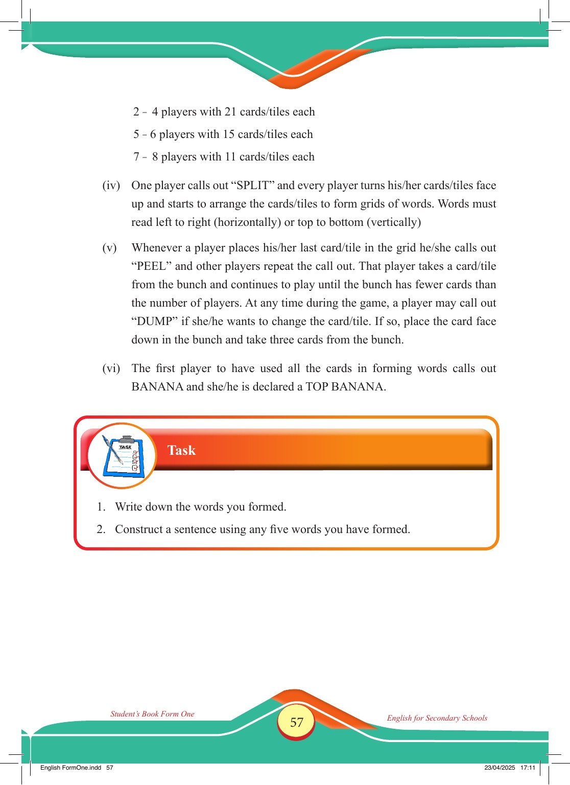

Accessible text transcript - page 57
Use the reader's read-aloud controls or select an individual segment below.
Printed book page 57. 2 – 4 players with 21 cards/tiles each 5 – 6 players with 15 cards/tiles each 7 – 8 players with 11 cards/tiles each (iv) One player calls out “SPLIT” and every player turns his/her cards/tiles face up and starts to arrange the cards/tiles to form grids of words. Words must read left to right (horizontally) or top to bottom (vertically) (v) Whenever a player places his/her last card/tile in the grid he/she calls out “PEEL” and other players repeat the call out. That player takes a card/tile from the bunch and continues to play until the bunch has fewer cards than the number of players. At any time during the game, a player may call out “DUMP” if she/he wants to change the card/tile. If so, place the card face down in the bunch and take three cards from the bunch. (vi) The first player to have used all the cards in forming words calls out BANANA and she/he is declared a TOP BANANA. Student’s Book Form One English for Secondary Schools English FormOne.indd 57 23/04/2025 17:11 Task 1. Write down the words you formed. 2. Construct a sentence using any five words you have formed. Return to the page image